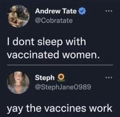
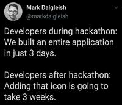

0
0

Ancient Slashdot reader alanw shares a report from the European Space Agency (ESA): Last year, an approximately 60 meter near-Earth object captured global attention. For a brief period, asteroid 2024 YR4 became the most dangerous asteroid discovered in the last 20 years. While an Earth impact was soon ruled out, the asteroid faded from view with a lingering 4% chance of striking the Moon on 22 December 2032. Now, that risk has been eliminated. Astronomers have confirmed that 2024 YR4 will not impact the Moon using new observations made by the Near-Infrared Camera (NIRCam) on the NASA/ESA/CSA James Webb Space Telescope. Instead, it will safely pass the Moon at a distance of more than 20 000 km.
Read more of this story at Slashdot.
U.S. Customs and Border Protection (CBP) said in a filing on Friday that it currently cannot process billions in tariff refunds because its import-processing system is "not well suited to a task of this scale." The Verge reports: The CBP's admission comes after the Supreme Court struck down the tariffs imposed by Trump under the International Emergency Economic Powers Act (IEEPA) last month. This week, the International Trade Court ruled that importers impacted by the tariffs are entitled to refunds with interest. The CBP estimates that it collected around $166 billion in IEEPA duties as of March 4th, 2026. [...]
The CBP says it currently processes imports through its Automated Commercial Environment (ACE) system. In the filing, Lord says that using the department's existing technology, it would take more than 4.4 million hours to process refunds for the over 53.2 million entries with IEEPA duties. Despite these current limitations, the CBP says it's "confident" it can develop and launch new capabilities to "streamline and consolidate refunds and interest payments on an importer basis" -- but this could take 45 days. "The process will be simpler and more efficient than the existing functionalities, and CBP will provide guidance on how to file refund declarations in the new system," Lord says.
Read more of this story at Slashdot.
Smart ring maker Oura has acquired Doublepoint, a Finnish startup specializing in gesture recognition technology for wearables. Engadget reports: The Finnish startup uses smartwatches and wristbands as examples of products that benefit from its technology, but Oura will clearly be looking to incorporate it into its rings, in theory allowing you to control your connected devices with hand movements.
Oura said in a press release that the deal sees it inherit an "exceptional team of AI architects and builders from Doublepoint," including Doublepoint's four founders. The newly-acquired company will remain in its native Helsinki, where it will work with Oura's international teams.
It added that Doublepoint's expertise in helping devices register subtle hand movements will be key, as nobody wearing a smart ring is going to engage with gesture control if they have to thrash their hand around like a conductor.
Read more of this story at Slashdot.
In a blog post on Thursday, System76 CEO Carl Richell criticized new state laws in California, Colorado, and New York that would require operating systems to verify users' ages and expose that information to apps, arguing the rules are easy for kids to bypass and ultimately undermine privacy and freedom more than they protect minors.
"System76's position is interesting given that they sell Linux-loaded desktops, workstations and laptops plus being an operating system vendor with their in-house Pop!_OS distribution and COSMIC desktop environment," adds Phoronix's Michael Larabel, noting that they're also based out of Colorado. Here's an excerpt from the post: "A parent that creates a non-admin account on a computer, sets the age for a child account they create, and hands the computer over is in no different state. The child can install a virtual machine, create an account on the virtual machine and set the age to 18 or over. It's a similar technique to installing a VPN to get around the Great Firewall of China (just consider that for a moment). Or the child can simply re-install the OS and not tell their parents. ... In the case of Colorado's and California's bills, effectiveness is lost. In the case of New York's bill, liberty is lost. In the case of centralized platforms, potential is lost. ... The challenges we face are neither technical nor legal. The only solution is to educate our children about life with digital abundance. Throwing them into the deep end when they're 16 or 18 is too late. It's a wonderful and weird world. Yes, there are dark corners. There always will be. We have to teach our children what to do when they encounter them and we have to trust them." "We are accustomed to adding operating system features to comply with laws," writes Richell, in closing. "Accessibility features for ADA, and power efficiency settings for Energy Star regulations are two examples. We are a part of this world and we believe in the rule of law. We still hope these laws will be recognized for the folly they are and removed from the books or found unconstitutional."
Read more of this story at Slashdot.
darwinmac writes: Mozilla is working on a huge redesign for its Firefox browser, codenamed "Nova," which will bring pastel gradients, a refreshed new tab page, floating "island" UI elements, and more. "From the mockups, it appears Mozilla took some inspiration from Googles Material You (or at least, the dynamic color extraction part of it) because the browser color accent appears influenced by the wallpaper setting," reports Neowin. "Choosing a mint-green desktop background automatically shifts the top navigation bars to match that exact shade."
Mozilla has a habit of redesigning Firefox every few years. Before "Nova," there was the "Proton" redesign in 2021, the "Photon" redesign in 2017, and the "Australis" redesign in 2014. Nova is still in early development, so it might take a year or two before it appears in an official stable Firefox release. Neowin adds: "Not every redesign project ends well for Mozilla, though. You might remember 2012's Firefox Metro, an ambitious attempt to build a custom browser for Windows 8s touch-first interface. The team built it to operate both as a traditional desktop application and as a touch-optimized Metro app. The whole thing was scrapped in 2014 after two years in development due to a dismally low user adoption rate (a preview version of the software had been released a year earlier on the Aurora channel)."
Read more of this story at Slashdot.
An anonymous reader quotes a report from Bloomberg, written by Katrina Manson: The U.S. strikes on Iran ordered by President Donald Trump mark the arrival on a large scale of a new era of warfare assisted by artificial intelligence. Captain Timothy Hawkins, a Central Command spokesperson, told me last night that the AI tools the U.S. military is using in Iran operations don't make targeting decisions and don't replace humans. But they do help "make smarter decisions faster." That's been the driving ambition of the U.S. military, which has spent years looking at how to develop and deploy AI to the battlefield [...].
Critics, such as Stop Killer Robots, a coalition of 270 human-rights groups, argue that AI-enabled decision-support systems reduce the separation between recommending and executing a strike to a "dangerously thin" line. Hawkins said the military's use of AI assistance follows a rigorous process aligned with U.S. policy, military doctrine and the law. Artificial intelligence helps analysts whittle down what they need to focus on, generating so-called points of interest and helping personnel make "smart" decisions in the Iran operations, he told me. AI is also helping to pull data within systems and organize information to provide clarity.
Among the AI tech used in the Iran campaign is Maven Smart System, a digital mission control platform produced by Palantir [...]. That emerged from Project Maven, a project started in 2017 by the Pentagon to develop AI for the battlefield. Among the large language models installed on the system is Anthropic's Claude AI tool, according to the people, who said it has become central to U.S. operations against Iran and to accelerating Maven's development. Claude is also at the center of a row that pits Anthropic against the Department of Defense over limits on the software. Further reading: Hacked Tehran Traffic Cameras Fed Israeli Intelligence Before Strike On Khamenei
Read more of this story at Slashdot.
Longtime Slashdot reader AmiMoJo shares a report from 404 Media: Privacy-focused email provider Proton Mail provided Swiss authorities with payment data that the FBI then used to determine who was allegedly behind an anonymous account affiliated with the Stop Cop City movement in Atlanta, according to a court record reviewed by 404 Media. The records provide insight into the sort of data that Proton Mail, which prides itself both on its end-to-end encryption and that it is only governed by Swiss privacy law, can and does provide to third parties. In this case, the Proton Mail account was affiliated with the Defend the Atlanta Forest (DTAF) group and Stop Cop City movement in Atlanta, which authorities were investigating for their connection to arson, vandalism and doxing. Broadly, members were protesting the building of a large police training center next to the Intrenchment Creek Park in Atlanta, and actions also included camping in the forest and lawsuits. Charges against more than 60 people have since been dropped.
Read more of this story at Slashdot.
An anonymous reader quotes a report from Ars Technica: Hayden AI, a San Francisco startup that makes spatial analytics tools for cities worldwide, has sued its co-founder and former CEO, alleging that he stole a large quantity of proprietary information in the days leading up to his ouster from the company in September 2024. In a lawsuit filed late last month in San Francisco Superior Court but only made public this week, Hayden AI claims that former CEO Chris Carson undertook what it called "numerous fraudulent actions," which include "forged board signatures, unauthorized stock sales, and improper allocation of personal expenses." [...] Hayden AI, which is worth $464 million according to an estimated valuation on PitchBook, has asked the court to impose preliminary injunctive relief, requiring Carson to either return or destroy the data he allegedly stole. Specifically, the lawsuit alleges that Carson secretly sold over $1.2 million in company stock, forged board signatures, and copied 41GB of proprietary company emails before being fired in September 2024. The complaint also claims Carson fabricated key parts of his resume, including a PhD and military service. It's a "carefully constructed fraud," says Hayden AI.
"That is a lie," the complaint states. "Carson does not hold a PhD from Waseda or any other university. In 2007, he was not obtaining a PhD but was operating 'Splat Action Sports,' a paintball equipment business in a Florida strip mall."
Read more of this story at Slashdot.
The Global Times reports: China's first domestically developed quantum computer operating system, Origin Pilot, has been made available for online download, the Global Times learned from the Anhui Quantum Computing Engineering Research Center on Wednesday. A Chinese scientist said while several quantum computing operating system efforts are underway worldwide, this is the first developed in China where it is seen as part of China's broad effort to achieve technology independence and to achieve technology advance in quantum computing.
The center said the release marks the world's first open-source quantum computer operating system available for public download, which is expected to lower development barriers and support the growth of China's quantum computing ecosystem. Developed by Hefei-based Origin Quantum Computing Technology Co, the company behind China's third-generation superconducting quantum computer, Origin Wukong, Origin Pilot was first launched in 2021 and has gone through multiple rounds of iteration and upgrade.
The developer describes it as an integrated quantum-classical-intelligent computing operating system compatible with major hardware approaches, including superconducting qubits, trapped ions and neutral atoms. It is now deployed on the company's Origin Wukong series and is available to external users, the company said. Guo Guoping, chief scientist of Origin Quantum and director at the Anhui Quantum Computing Engineering Research Center, told the Global Times that a quantum operating system is the "soft heart" of the quantum computing ecosystem. He said the decision to make Origin Pilot available globally marks a shift in China's quantum computing industry from closed-door tech innovation to broader open-source ecosystem development. Dou Menghan, head of the research team, said: "Users can quickly integrate with quantum chips of multiple physical types and, using autonomous programming frameworks such as QPanda, execute quantum computing jobs across different physical quantum chips to support both research and commercialization needs."
Read more of this story at Slashdot.
An anonymous reader The Guardian: Humanity is heating the planet faster than ever before, a study has found. Climate breakdown is occurring more rapidly with the heating rate almost doubling, according to research that excludes the effect of natural factors behind the latest scorching temperatures. It found global heating accelerated from a steady rate of less than 0.2C per decade between 1970 and 2015 to about 0.35C per decade over the past 10 years. The rate is higher than scientists have seen since they started systematically taking the Earth's temperature in 1880.
"If the warming rate of the past 10 years continues, it would lead to a long-term exceedance of the 1.5C (2.7F) limit of the Paris agreement before 2030," said Stefan Rahmstorf, a scientist at the Potsdam Institute for Climate Impact Research and co-author of the study. [...] The researchers applied a noise-reduction method to filter out the estimated effect of nonhuman factors in five major datasets that scientists have compiled to gauge the Earth's temperature. In each of them, they found an acceleration in global heating emerged in 2013 or 2014. The findings have been published in the journal Geophysical Research Letters.
Read more of this story at Slashdot.
An anonymous reader quotes a report from Wired: While TikTok operates in the United States under new ownership, Apple has deployed technical restrictions to block iOS users in the United States from downloading other apps made by the video platform's Chinese parent organization ByteDance. ByteDance owns a vast array of different apps spanning social media, entertainment, artificial intelligence, and other sectors. The leading one is Douyin, the Chinese version of TikTok, which has over 1 billion monthly active users. While most of those users reside in China, iPhone owners around the world have traditionally been able to download these apps from anywhere without using a VPN, as long as they have a valid App Store account registered in China.
That's not true anymore. Starting in late January, iPhone users in the U.S. with Chinese App Store accounts began reporting that they were encountering new obstacles when they tried to download apps developed by ByteDance. WIRED has confirmed that even with a valid Chinese App Store account, downloading or updating a ByteDance-owned Chinese app is blocked on Apple devices located in the United States. Instead, a pop-up window appears that says, "This app is unavailable in the country or region you're in." The restriction appears to apply only to ByteDance-owned apps and not those developed by other Chinese companies.
The timing and technical specifics suggest the restriction is related to the deal TikTok agreed to in January to divest Chinese ownership of its U.S. operations. The agreement was the result of the so-called TikTok ban law passed by Congress in 2024, which also barred companies like Apple and Google from distributing other apps majority-owned by ByteDance. The Protecting Americans from Foreign Adversary Controlled Applications Act states that no company can "distribute, maintain, or update" any app majority-controlled by ByteDance "within the land or maritime borders of the United States."
The law was primarily aimed at TikTok, which has more than 100 million users in the U.S. and had been the subject of years of debate in Washington over whether its Chinese ownership posed a national security risk. But ByteDance also has dozens of other apps that at some point were also removed from Apple's and Google's app stores in the U.S.. Now it seems like the scope of impact has reached even more apps that are not technically designed for U.S. audiences, such as Douyin, the AI chatbot Doubao, and the fiction reading platform Fanqie Novel.
Read more of this story at Slashdot.
Ancient Slashdot reader ewhac writes: The maintainers of the Python package `chardet`, which attempts to automatically detect the character encoding of a string, announced the release of version 7 this week, claiming a speedup factor of 43x over version 6. In the release notes, the maintainers claim that version 7 is, "a ground-up, MIT-licensed rewrite of chardet." Problem: The putative "ground-up rewrite" is actually the result of running the existing copyrighted codebase and test suite through the Claude LLM. In so doing, the maintainers claim that v7 now represents a unique work of authorship, and therefore may be offered under a new license. Version 6 and earlier was licensed under the GNU Lesser General Public License (LGPL). Version 7 claims to be available under the MIT license.
The maintainers appear to be claiming that, under the Oracle v. Google decision, which found that cloning public APIs is fair use, their v7 is a fair use re-implementation of the `chardet` public API. However, there is no evidence to suggest their re-write was under "clean room" conditions, which traditionally has shielded cloners from infringement suits. Further, the copyrightability of LLM output has yet to be settled. Recent court decisions seem to favor the view that LLM output is not copyrightable, as the output is not primarily the result of human creative expression -- the endeavor copyright is intended to protect. Spirited discussion has ensued in issue #327 on `chardet`s GitHub repo, raising the question: Can copyrighted source code be laundered through an LLM and come out the other end as a fresh work of authorship, eligible for a new copyright, copyright holder, and license terms? If this is found to be so, it would allow malicious interests to completely strip-mine the Open Source commons, and then sell it back to the users without the community seeing a single dime.
Read more of this story at Slashdot.
The National Videogame Museum has acquired an extremely rare MSF-1 development kit, believed to be the oldest surviving prototype of the canceled Nintendo PlayStation. Engadget reports: Nicknamed the Nintendo PlayStation, the idea was that a new CD-ROM format backed by Sony would be added to the cartridge-based Super NES, resulting in a hybrid console that could play both. The partnership didn't last long, though, with Nintendo backing out before it ever really got off the ground, announcing that it would instead be working with Philips. Sony decided to make the PlayStation on its own instead, in an act of revenge that you have to say paid off in the long run, and we never did get to see Crash Bandicoot running around the Mushroom Kingdom. Still, the short-lived Nintendo PlayStation remains a fascinating what-if scenario in video game history, and the USA's National Video Museum has acquired the original development kit.
Read more of this story at Slashdot.
An anonymous reader shared this report from the Independent:
A popular predictions market app will not pay out the $54 million some of its users believed they were owed after correctly forecasting the death of Ayatollah Ali Khamenei, according to a report.
Kalshi, which allows players to gamble on real-world events, offered customers favorable odds on Khamenei, 86, being "out as Supreme Leader" in response to the announcement of joint U.S.-Israeli airstrikes on Tehran in the early hours of Saturday morning. The company promoted the trade on its homepage and app and tweeted [last] Saturday: "BREAKING: The odds Ali Khamenei is out as Supreme Leader have surged to 68 percent." It continued: "Reminder: Kalshi does not offer markets that settle on death. If Ali Khamenei dies, the market will resolve based on the last traded price prior to confirmed reporting of death." Khamenei was later confirmed dead in the airstrikes and the company clarified in a follow-up post: "Please note: A prior version of this clarification was grammatically ambiguous. As a customer service measure, Kalshi will reimburse lost value due to trades made between these clarifications...."
While the company has offered to reimburse any bets, fees or losses from the trade placed prior to its clarification message, it has nevertheless attracted a firestorm of complaints on social media.
A Kalshi spokesperson told Reuters they'd reimbursed "net losses" out of pocket "to the tune of millions of dollars". But a class action lawsuit was filed Thursday saying Kalshi had failed to pay $54 million:
Kalshi did not invoke a "death carveout" provision until after the Iranian leader was killed to avoid paying customers in Kalshi's "Khamenei Market" what they were owed, the lawsuit said... The language specifying that Khamenei's departure could be due to any cause, including death, was "clear, unambiguous and binary," the lawsuit said, describing Kalshi's actions as "deceptive" and "predatory."
"In a notice filed Monday, the company proposed standardizing the terms of all its markets that implicitly depend on a person surviving..." reports Business Insider. "The update comes after Kalshi paid $2.2 million to resolve complaints from users who were confused by the way it divided the $55 million wagered on Iran's Supreme Leader Ali Khamenei's ouster after his targeted killing by Israel and the US."
Their article cites a DePaul University law professor who says "There's now sort of this nascent, but bipartisan movement against prediction markets. I think Kalshi's feeling the heat." For example, U.S. Senator Chris Murphy told the Washington Post, "People shouldn't be rooting for people to die because they placed a bet."
Read more of this story at Slashdot.
Indonesia will ban children under 16 from having accounts on major social media platforms as part of a government push to protect minors from harmful content, addiction, and online threats. The rule will roll out starting March 28 and makes Indonesia the first country in Southeast Asia to impose such a restriction. The Guardian reports: Meutya Hafid said in a statement to media said that she signed a government regulation that will mean children under the age of 16 can no longer have accounts on high-risk digital platforms, including YouTube, TikTok, Facebook, Instagram, Threads, X, Roblox and Bigo Live, a popular livestreaming site. With a population of about 285 million, the fourth-highest in the world, the south-east Asian nation represents a significant market for social networks.
The implementation will start gradually from 28 March, until all platforms fulfill their compliance obligations. "The basis is clear. Our children face increasingly real threats. From exposure to pornography, cyberbullying, online fraud, and most importantly addiction. The government is here so that parents no longer have to fight alone against the giant of algorithms," Hafid said.
She added that the government is taking this step as the best effort in the midst of a digital emergency to reclaim sovereignty over children's futures. "We realize that the implementation of this regulation may cause some discomfort at first. Children may complain and parents may be confused about how to respond to their children's complaints," Hafid said.
Read more of this story at Slashdot.
Eduardo Baptista / Reuters : China's commerce ministry warns of global chip shortages due to “new conflicts” between Dutch chipmaker Nexperia and its Chinese subsidiary — China's commerce ministry on Saturday raised the possibility of another global semiconductor supply chain crisis due to “new conflicts” …
Cory Weinberg / The Information : Financial figures shared with prospective investors: Anduril expects its revenue to grow 100% in 2026 to ~$4.3B, and its operating loss to rise by ~50% to $1.2B — Weapons maker Anduril expects to roughly double revenue this year to about $4.3 billion, while its operating loss would rise …
Belle Lin / Wall Street Journal : A profile of Simile, which offers “agentic twins” modeled on real people to provide answers for polling and market research for companies like CVS and Gallup — AI startup Simile offers ‘agentic twins’ modeled on real people to provide answers for polling and market research
Cecilia D'Anastasio / Bloomberg : Roblox says it paid out $1.5B to game creators in 2025 and the top 1,000 earned $1.3M on average; 50%+ of creators list high school as their highest education — Roblox creators are raking in hundreds of thousands a month from simple games like ‘Fisch,’ even as major studios cut jobs and cancel blockbusters.
Bobby Allyn / NPR : A look at the rivalry between Kalshi CEO Tarek Mansour and Polymarket CEO Shayne Coplan, who have competing visions for how prediction markets should grow — There's one word Kalshi CEO Tarek Mansour is loath to say: Polymarket. — Like a politician swiping his never-to-be-spoken …
The Information : Sources: online DTC luxury brand Quince is in talks to raise funding at a $10B+ valuation, up from $4.5B in July; its annualized revenue run rate has hit ~$2B — Online retailer Quince is in talks with investors to raise a funding round that would value the company at above $10 billion after the investment …
Nikkei Asia : China's smartphone market is seeing one of its widest price hikes as memory chip crunch deepens; Meizu announces it will suspend developing new mobile hardware — TOKYO — China's smartphone market is seeing one of its biggest and widest price hikes ever, affecting almost all brands and product categories …
Jessica Lyons / The Register : Google's TIG documented 90 zero-day vulnerabilities exploited in 2025, up from 78 in 2024; commercial spyware vendors and China-linked groups led the abuse — Of the 90 zero-days GTIG tracked in 2025, 43 hit enterprise tech — Zero-day exploitation targeting enterprise tech products reached …
Financial Times : US investors are pushing Asian fund managers to create special vehicles so they can invest in Asia while avoiding US investment restrictions on Chinese tech — Institutional clients increasingly want so-called parallel funds that exclude certain assets — US investors are increasingly …
Business Insider : The US' February jobs report shows the tech sector's post-2022 job losses are now outpacing past downturns in 2008 and 2020 — - Tech industries are losing their strength. — One economist said tech job losses outpaced the past two recessions. — Still, there is weakness in other areas of the job market.
Stephen Morris / Financial Times : Alphabet gives Sundar Pichai a new three-year pay deal worth up to $692M, with stock incentives worth as much as $350M linked to the growth of Waymo and Wing — Alphabet boss gets bumper package of stock options tied to the share price and growth of Waymo in the next three years
Bloomberg : In a Twitter shareholder trial, former CEO Parag Agrawal and CFO Ned Segal disputed Musk's claims that they lied to him about the percentage of spam accounts — Two former top executives at Twitter Inc. sought to beat back Elon Musk's narrative at a jury trial that they lied to him about the makeup …
Financial Times : A draft guidance from the US GSA tightens rules for civilian AI contracts to require AI companies to allow “any lawful” use by the government of their models — The Trump administration has drawn up tight rules for civilian artificial intelligence contracts that would require AI companies …
Wall Street Journal : Sources: Kalshi and Polymarket are each eyeing valuations of ~$20B in fundraising talks; Kalshi was valued at $11B in December and Polymarket at $9B in October — Prediction market rivals are speaking to investors about roughly doubling their previous valuations
Tim Starks / CyberScoop : The Trump administration debuts its cyber strategy, outlining priorities including promoting offense operations, securing AI tech, and streamlining regulations — The administration also released an executive order on cybercrime and fraud. — Learn more.